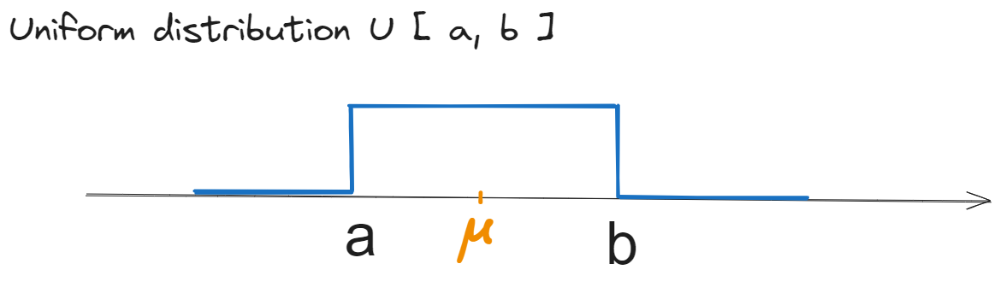
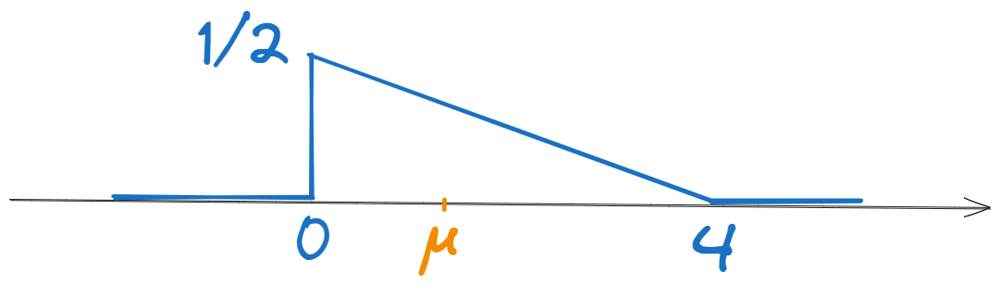

9 Seminar 02: Medii statistice și temporale
9.1 Exercițiul 1
Calculați valoarea medie, valoarea pătratică medie și varianța unui proces aleator staționar având distribuția unui eșantion egală cu:
a). \(w_1(x) = \mathcal{U}[a,b]\) pentru niște valori \(a, b \in \mathbb{R}\);
b). \(w_2(x) = \begin{cases} \frac{1}{2} - \frac{1}{8} x, &x \in [0,4] \\ 0, &în \;\; rest \end{cases}\)
În acest caz, reprezentați și distribuția și verificați faptul că integrala sa este egală cu 1.
Rezolvare
Vom folosi definițiile: \[\overline{X} = \mu = \int_{-\infty}^{\infty} x w(x) dx\] \[\overline{X^2} = \int_{-\infty}^{\infty} x^2 w(x) dx\] \[\begin{aligned} \sigma_X^2 &= \int_{-\infty}^{\infty} (x - \mu)^2 w(x) dx\\ &= \overline{X^2} - \mu^2 \end{aligned}\]
a). Pentru \(w_1(x) = \mathcal{U}[a,b]\) , reprezentată mai jos, vem:

Media: \[\begin{aligned} \mu = \overline{X} &= \int_{-\infty}^{\infty} x \cdot w(x) dx \\ &= \int_{a}^{b} x \frac{1}{b-a} dx \\ &= \frac{1}{b-a} \cdot \frac{x^2}{2} \Biggr|_{a}^{b} \\ &= \frac{1}{b-a} \cdot \frac{b^2 - a^2}{2} \\ &= \frac{b + a}{2} \end{aligned}\]
Valoarea pătratică medie: \[\begin{aligned} \overline{X^2} &= \int_{-\infty}^{\infty} x^2 \cdot w(x) dx \\ &= \int_{a}^{b} x^2 \frac{1}{b-a} dx \\ &= \frac{1}{b-a} \cdot \frac{x^3}{3} \Biggr|_{a}^{b} \\ &= \frac{1}{b-a} \cdot \frac{b^3 - a^3}{3} \\ &= \frac{b^2 + ab + a^2}{3} \end{aligned}\]
Varianța: \[\begin{aligned} \sigma_X^2 &= \int_{-\infty}^{\infty} (x - \mu)^2 \cdot w(x) dx \\ &= \int_{a}^{b} (x - \frac{a+b}{2})^2 \frac{1}{b-a} dx \\ &= \frac{1}{b-a} \cdot \frac{(x - \frac{a+b}{2})^3}{3} \Biggr|_{a}^{b} \\ &= \frac{1}{b-a} \cdot \frac{(b - \frac{a+b}{2})^3 - (a - \frac{a+b}{2})^3}{3} \\ &= \frac{1}{b-a} \cdot \frac{(b - a)^3}{12} \\ &= \frac{(b - a)^2}{12} \end{aligned}\]
Varianța poate fi calculată și ca diferența dintre valoarea pătratică medie și pătratul mediei: \[\begin{aligned} \sigma_X^2 &= \overline{X^2} - \mu^2 \\ &= \frac{b^2 + ab + a^2}{3} - \frac{(b + a)^2}{4} \\ &= \frac{4b^2 + 4ab + 4a^2 - 3b^2 - 6ab - 3a^2}{12} \\ &= \frac{b^2 - 2ab + a^2}{12} \\ &= \frac{(b - a)^2}{12} \end{aligned}\]
b). Graficul funcției \(w_2(x)\) este reprezentat mai jos. \[w_2(x) = \begin{cases} \frac{1}{2} - \frac{1}{8} x, &x \in [0,4] \\ 0, &în \;\; rest \end{cases}\]

Integrala sa reprezintă aria unui triunghi dreptunghic cu catetele \(4\) și \(\frac{1}{2}\), deci: \[\int_{-\infty}^{\infty} w_2(x) dx = \frac{4 \cdot \frac{1}{2}}{2} = 1\]
Media: \[\begin{aligned} \overline{X} &= \int_{-\infty}^{\infty} x \cdot w(x) dx \\ &= \int_{0}^{4} x \cdot \left(\frac{1}{2} - \frac{1}{8} x\right) dx \\ &= \frac{1}{2} \cdot \frac{x^2}{2} \Biggr|_{0}^{4} - \frac{1}{8} \cdot \frac{x^3}{3} \Biggr|_{0}^{4} \\ &= \frac{1}{2} \cdot \frac{4^2}{2} - \frac{1}{8} \cdot \frac{4^3}{3} \\ &= 4 - \frac{8}{3} \\ &= 1.333 \end{aligned}\]
Valoarea pătratică medie: \[\begin{aligned} \overline{X^2} &= \int_{-\infty}^{\infty} x^2 \cdot w(x) dx \\ &= \int_{0}^{4} x^2 \cdot \left(\frac{1}{2} - \frac{1}{8} x\right) dx \\ &= \frac{1}{2} \cdot \frac{x^3}{3} \Biggr|_{0}^{4} - \frac{1}{8} \cdot \frac{x^4}{4} \Biggr|_{0}^{4} \\ &= \frac{1}{2} \cdot \frac{4^3}{3} - \frac{1}{8} \cdot \frac{4^4}{4} \\ &= \frac{32}{3} - 8 \\ &= \frac{8}{3} \end{aligned}\]
Varianța: \[\begin{aligned} \sigma_X^2 &= \overline{X^2} - \mu^2 \\ &= \frac{8}{3} - \left(\frac{4}{3}\right)^2 \\ &= \frac{8}{3} - \frac{16}{9} \\ &= \frac{8}{9} \end{aligned}\]
9.2 Exercițiul 2
Calculați valoarea medie temporală, valoarea pătratică medie temporală, varianța temporală și funcția de autocorelație temporală pentru următoarea realizare a unui proces aleator de lungime finită:
\[f = [-1, 2, -1, 2, -1, 2, -1, 2, -1, 2]\]
Rezolvare
Pentru această secvență de zece numere, aplicăm definiițile mediilor temporale.
Valoarea medie temporală este media aritmetică a numerelor: \[\overline{f_t} = \frac{-1 + 2 - 1 + 2 - 1 + 2 - 1 + 2 - 1 + 2}{10} = \frac{5}{10} = 0.5\]
Valoarea pătratică medie temporală este media aritmetică a pătratelor numerelor: \[\overline{f_t^2} = \frac{(-1)^2 + 2^2 + (-1)^2 + 2^2 + (-1)^2 + 2^2 + (-1)^2 + 2^2 + (-1)^2 + 2^2}{10} = \frac{25}{10} = 2.5\]
Varianța temporală este diferența dintre valoarea pătratică medie și pătratul mediei: \[\sigma_f^2 = \overline{f_t^2} - \overline{f_t}^2 = 2.5 - 0.5^2 = 2.25\] De asemenea, se poate calcula si conform definiției.
Funcția de autocorelație temporală de definește ca media produselor eșantioanelor separate de un interval de timp \(k\): \[r_{ff}(k) = \overline{f[t] \cdot f[t+k]}\] Așadar: \[r_{ff}[0] = \overline{f[t] \cdot f[t]} = \overline{f_t^2} = 2.5\] \[r_{ff}[1] = \overline{f[t] \cdot f[t+1]} = \frac{(-1)2 + 2(-1) + (-1)2 + 2(-1) + (-1)2 + 2(-1) + (-1)2 + 2(-1)}{9} = -2\] \[r_{ff}[2] = \overline{f[t] \cdot f[t+2]} = \frac{(-1)(-1) + 2\cdot 2 + (-1)(-1) + 2\cdot 2 + (-1)(-1) + 2\cdot 2 + (-1)(-1) + 2\cdot 2}{8} = 2.5\] Se continuă în acest mod până la ultima valoare: \[r_{ff}[9] = \overline{f[t] \cdot f[t+9]} = \frac{(-1)(2)}{1} = -2\] Valorile funcției de autocorelație pentru \(k\) negativ se obțin prin simetrie: \[r_{ff}[-k] = r_{ff}[k]\] Așadar: \[r_{ff}[-1] = r_{ff}[1] = -2\] \[r_{ff}[-2] = r_{ff}[2] = 2.5\] și așa mai departe până la: \[r_{ff}[-9] = r_{ff}[9] = -2\]
9.3 Exercițiul 3
Calculați valoarea medie temporală, valoarea pătratică medie temporală, varianța temporală și funcția de autocorelație temporală pentru următorul semnal deterministic, considerat pe durata unei singure perioade \(T=\frac{1}{f}\):
\[ s(t) = cos(2 \pi f t)\]
(Sugestie: Considerați \(s(t)\) ca fiind o realizare a unui proces aleator oarecare, și rezolvați ca la problema 2).
Rezolvare
Semnalul \(s(t)\) este reprezentat mai jos.
Pentru semnale continue, valoarea medie temporală reprezintă componenta de curent continuu a semnalului. Din figură se poate deduce că aceasta este \(0\), prin urmare: \[\overline{s(t)} = 0\]
Valoarea medie pătratică temporală (media semnalului ridicat la pătrat) reprezintă “tensiunea efectivă” a semnalului (la pătrat), și se definește astfel: \[\overline{s^2(t)} = \frac{1}{T} \int_{0}^{T} s^2(t) dt\]
Folosind formula trigonometrică \[cos^2(x) = \frac{1 + cos(2x)}{2}\] avem: \[\begin{aligned} \overline{s^2(t)} &= \frac{1}{T} \int_{0}^{T} s^2(t) \\ &= \frac{1}{T} \int_{0}^{T} \cos^2(2 \pi f t) dt \\ &= \frac{1}{T} \int_{0}^{T} \frac{1 + \cos(4 \pi f t)}{2} dt \\ &= \frac{1}{T} \int_{0}^{T} \frac{1}{2} dt + \frac{1}{T} \int_{0}^{T} \frac{\cos(4 \pi f t)}{2} dt \\ &= \frac{1}{2} + \frac{1}{2T} \cdot \frac{\sin(4 \pi f t)}{4 \pi f} \Biggr|_{0}^{T} \\ &= \frac{1}{2}\\ \end{aligned}\]
Această valoare se putea obține și folosindu-ne de faptul cunoscut că tensiunea efectivă a unui semnal sinusoidal de amplitudine \(A\) este egală cu \(\frac{A}{\sqrt{2}}\). Pentru \(A=1\), pătratul valorii efective este \(\frac{1}{2}\).
TODO restul